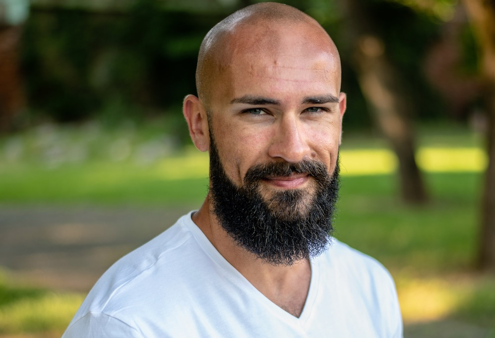

Mă numesc Balogh Gergő-Tamás, am 33 de ani și sunt antrenor pesonal, antrenor de fitness și culturism, antrenor core și antrenor preventiv de coloană vertebrală. Am 14 ani de când fac acest lucru și totul a început ca un simplu hobby. Înainte de a practica fitness-ul, am jucat fotbal la FC Bihor și am practicat taekwon-do la SC Taekyon. Pe de altă parte sunt inginer IT și tatăl a doi copii. Diplomele de antrenor le-am dobândit în urma absolvirii cursulilor aferente la Academia de Fitness din Budapesta și la Academia de mișcare Almásy tot din Budapesta. Aceste cursuri s-au întins pe durata a 2X5 luni (aproximativ 500 ore). Calificarea mea este de nivelul 5. În Oradea nimeni nu are nivel de pregătire superior față de al meu, nivelul 5 fiind cel mai mare posibil în acest domeniu. În continuare particip la cursuri de pregătire și instruire cu intenția de a satisface dorințele clienților mei în cel mai adecvat și optim mod.

„Dorința ta de a te schimba trebuie să fie mai mare decât dorința de a rămâne la fel.”

„Să fii FIT este mai mult decât un scop, un mod de viață.”

„Sunt 1440 de minute într-o zi.
Folosește 60 minute ca să te antrenezi.”
Ars poetica
Profesionalism
În fiecare domeniu al vieții trebuie să avem încredere în cineva: toată lumea are un medic de familie pe care-l crede, un mecanic auto în care are încredere sau un pantofar pe care se poate baza. În vederea îngrijirii corpului tău aș dori să fiu eu persoana în care crezi. Nu sunt eu cel care-ți va elimina grăsimea corporala, la fel cum nu sunt nici cel care îți va mări masa musculară sau rezistența. Toate aceste aspecte depind de tine, însă eu sunt acela care îți spune ce și cum să faci pentru a-ți atinge obiectivele astfel încât să te bucuri de această perioadă rămânând sănătos. Eu îți arăt calea, iar tu o urmezi.
Dedicare
Pe parcursul antrenamentului mă ocup numai și numai de tine: nu discut cu alții, nu vorbesc la telefon, iar pentru ca munca noastră să aibă rezultatele dorite am aceleași așteptări și de la tine.
Sănătate
Orice decizie ai lua, ai grijă de corpul tău deoarece nimeni altcineva nu poate face acest lucru în locul tău și în acest corp vei trăi toată viața ta.

Antrenor personal Oradea Balogh Gergő-Tamás - Oradea Trainer

De ce eu?
Sunt antrenor calificat, nu mă bazez doar pe experiență
Nu ne vom antrena doar într-o sală, mâncând pui și orez toată ziua ci vom alcătui un plan de mișcare pe mai multe nivele ca să ajungem la scopul propus!
Știu ce simți și știu cât de mult îți dorești schimbarea!
Împreună vom reuși, voi fi lângă tine chiar și dacă ai dori să renunți!
Va fi muncă în echipă, nu îți voi dirija cu supremație!
Vrei mai mult? Îți arăt cum poți șoca lumea!
Nu-ți ofer doar mișcări noi, vreau să-ți arăt o lume nouă, o dimensiune nouă!
Corp nou- dispoziție mai bună- apariție mai frumoasă- viață mai fericită- admirația altora!
Nu îți antrenez doar corpul ci și mintea!
Studiile mele de antrenor personal, până acum
Academia de Fitness - Budapesta
Antrenor de sport (culturism, fitness)
02.2018- 07.2018
Academia de mișcare Almásy - Budapesta
Antrenor preventiv de coloană vertebrală
09.2018- 10.2018
Academia de mișcare Almásy - Budapesta
Stabilizare - core
11.2018
Academia de Fitness - Budapesta
Antrenor personal(Level 5)
02.2019-07.2019
Academia de Fitness - Budapesta
Antrenor stretching
11.2019-12.2019
Gymnastics Method
Workshop de dezvoltarea puterii
02.2020
Dietă, slăbire și masă musculară
-
Dietă personalizată
Indiferent dacă vorbim despre intenția de a slăbi sau cea de creștere a masei musculare, fără o dietă corespunzătoare este imposibil să obții o transformare durabilă, păstrându-ți în același timp și sănătatea. Ideea de a merge la sală pentru a putea mânca orice și oricând, NU funcționează. Însă, prin controlul numărului de calorii pe care le consumi și cu antrenamente intense și serioase, nu există limite. În acest fel, eu am reușit să ajung de la 117 kg la 93 kg. Dieta nu este o cură de slăbire, deci respectarea ei nu este grea și cel mai important, poate fi ținută toată viața. Dieta la fel ca și antrenamentele se bazează pe chimie, fizică și biologie. Există formule, cifre și reguli care dacă sunt respectate, funcționează chiar și dacă nu ai vrea.
Susțin folosirea de suplimente nutritive și am o experiență serioasă în folosirea lor. Condamn dopping-ul și folosirea substanțelor interzise. Nu mă ocup de persoane care folosesc asemenea produse. Ca și antrenor personal în Oradea, îți fac o dietă personalizată.
-
Slăbire cu ajutorului unui antrenor personal!
-
Crestere in masă musculară

Abonamente
Înaintea începerii antrenamentelor personale, trebuie să stabilim împreună un obiectiv real la care să ajustăm stilul tău de viață/regimul/antrenamentele. Scopul nu este „de a slăbi” sau „de a fi mai mare”. Un obiectiv ar putea fi să-ți reduci cu 5 kg grăsimea corporală sau să-ți îmbunătățești condiția fizică. Recomand serviciile mele de fitness și culturism pentru cei care vin la mine cu un scop anume.
Pachet Light
599 RON / lună
- 2 ședințe / săptămână
- 8 antrenamente / lună
Pachet Medium
849 RON / lună
- 3 ședințe / săptămână
- 12 antrenamente / lună
Pachet Ultimate
1049 RON / lună
- 4 ședințe / săptămână
- 16 antrenamente / lună
Numărul antrenamentelor din oricare pachet se referă la o perioadă de 30 de zile (o lună). Ședințele nu sunt transferabile de la o lună la alta.
Ce ofer:- stabilirea unei diete personalizate/supraveghere sistematică
- stabilirea unui program de antrenament personalizat/supraveghere sistematică
- propunere unui pachet de suplimente nutritive personalizat/supraveghere sistematică
- ținerea și supravegherea antrenamentelor de 60-75 de minute.
Antrenamentele de fitness și culturism se țin în următoarea sală de fitness din Oradea: NRGYM.
Dietă personalizată:
Ai dori să slăbești însă nu ai timp de antrenamente? Ești sătul de diete și de cure de slăbire irealizabile, complicate și intolerabile? Există o soluție: îți pot face o dietă bazată pe calorii 100% personală , care este alcătuită din alimente obișnuite, ușor de cumpărat.
Taxă alcătuire dietă personalizată
299 RON
Săli fitness Oradea
- NRGYM – Str. Vlădeasa, nr. 42
- Ars Nova Fitness – Str. Selimbărului, nr. 2
- Athletic Gym - Bulevardul Ștefan cel Mare, nr. 144
- Endurance Fitness – Calea Aradului, nr. 35
- Fit4U – Str. Aluminei, nr. 45
- Fit4U – Str. Primăriei, nr. 29
- Fit4U – Str. Transilvaniei, nr. 17-19
- Fit4U – Magazinul Crisul (etajul 3)
- Fitness Mania – Str. Nucetului, nr. 12
- Get Fit – Str. Nufărului, nr. 30
- Gym Mar Strong – Str. Lăpușului, nr. 2
- Gym Mar Strong - Str. Transilvaniei, nr. 12
- Gym Palace - Str. Independenței, nr. 11
- Heredeu Gold Gym – Str. Constantin Brâncoveanu, nr. 12
- IRON Gym– Str. Corneliu Coposu, nr. 7
- Premier Fitness – Piața Creangă, nr. 15
